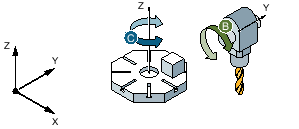

Machine kinematics with swivel head and swivel table.
Swivel head with rotary axis 1 (B) rotates around machine axis Y.
Angular range of rotary axis B from -90 to +90 degrees.
Swivel table with rotary axis 2 (C) rotates around machine axis Z.
Angular range of rotary axis 2 (C) from 0 to 360 degrees (modulo 360).
Machine manufacturer has set the direction reference to rotary axis 1 (B) when he commissioned the swivel function.
A rotation around X (WCS) of 10 degrees is programmed in the swivel cycle.
Basic position (pole setting) of the kinematics (B = 0 degrees, C = 0 degrees)
Rotary axis B moves to +10 degrees in the positive direction.
Rotary axis C moves to 270 degrees.
Rotary axis B moves to -10 degrees in the negative direction.
Rotary axis C moves to 90 degrees (rotation around X).
The two "Minus" or "Plus" direction settings enable a workpiece to be machined with swiveled planes. The two solutions calculated by the NC differ by 180 degrees (see rotary axis C).
See also:
Example 2 - CYCLE800